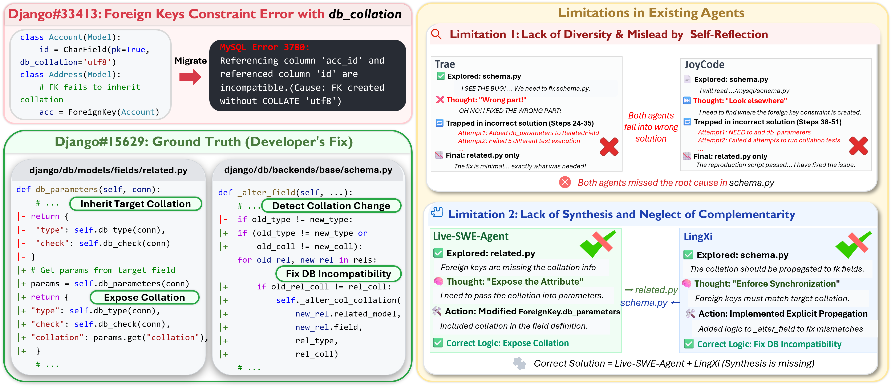
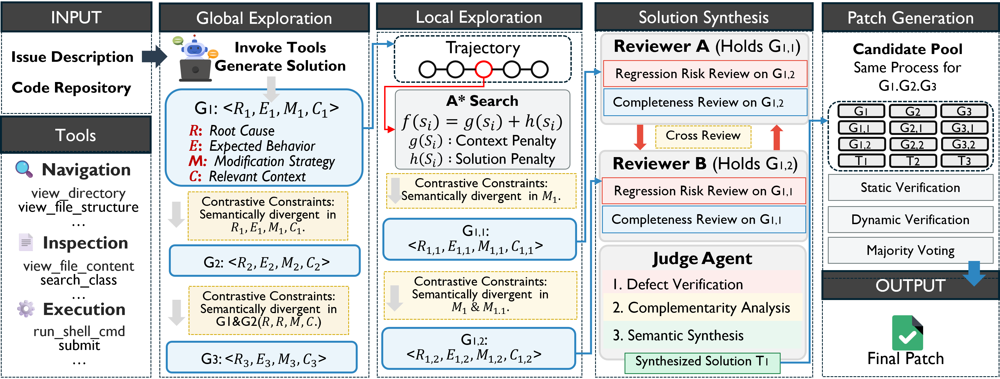
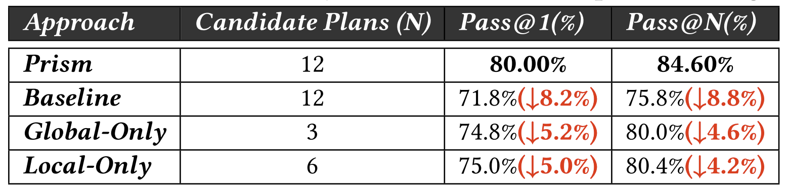
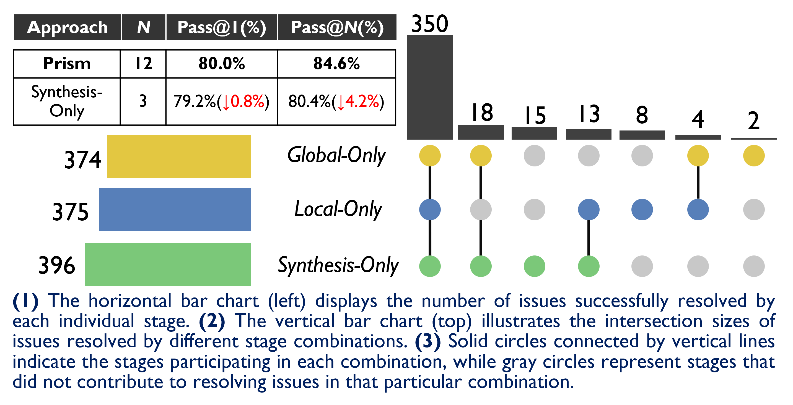

A Multi-Solution Reasoning and Synthesis Framework for
Repository-Level Issue Resolution
We present Prism, a multi-solution reasoning and synthesis framework for repository-level issue resolution. Existing agents face two critical bottlenecks: limited solution diversity caused by LLM mode collapse and misleading self-reflection, and a lack of synthesis capabilities that prevents leveraging complementary strengths across candidate patches. Prism adopts a coarse-to-fine paradigm across three stages — Global Exploration, Local Exploration, and Solution Synthesis — to systematically generate, refine, and integrate diverse repair solutions. With Claude 4.6 Sonnet, Prism achieves 82.0% Pass@1 on SWE-bench Verified, setting a new state-of-the-art. Further analyses confirm that the synthesis stage uniquely resolves 15 issues that no isolated candidate could address alone.

ForeignKey db_collation inheritance failure). Live-SWE-Agent correctly fixes related.py; LingXi correctly fixes schema.py; neither alone produces a complete patch — only synthesis resolves the issue.
RLHF-fine-tuned models exhibit mode collapse, producing semantically homogeneous solutions even under high-temperature sampling. Simultaneously, erroneous self-reflection feedback causes agents (e.g., Trae, JoyCode) to abandon correct reasoning paths and converge prematurely on incorrect, repetitive patches.
Existing frameworks evaluate candidates in isolation via ranking or voting, discarding complementary partial solutions. Complex issues (e.g., Django #33413) require coordinated multi-file modifications — no single agent covers all critical dimensions, yet no mechanism exists to synthesize their complementary strengths.
A coarse-to-fine pipeline: Global Exploration → Local Exploration → Solution Synthesis → Patch Generation.

Led by a plan agent, this stage iteratively generates NG semantically diverse fixing solutions. Each solution is decomposed into a four-tuple G = ⟨R, E, M, C⟩: Root Cause, Expected Behavior, Modification Strategy, and Relevant Context. When generating the k-th solution, all prior tuples are injected as contrastive semantic constraints, explicitly requiring divergence across all four dimensions.
Reusing accumulated context, this stage diversifies the modification strategy dimension (M). The execution trajectory T = {s0, …, sL} is analyzed to find the optimal branching point — a critical state with sufficient context but no committed strategy.
Reviewer agents perform cross-review along two dimensions: Completeness (missing fix locations?) and Regression Risk (unintended side effects?). The Judge agent then performs (1) Defect Verification, (2) Complementarity Analysis across ⟨R, E, M, C⟩, and (3) Semantic Synthesis — rewriting retained strengths into a unified repair plan.
All candidates from the three stages are consolidated into a unified candidate pool. Each undergoes static and dynamic verification. A majority voting mechanism selects the single final patch to be submitted.
Evaluated on SWE-bench Verified and SWE-bench Live Lite. Metric: Pass@1 (% Resolved).
| Method | Backbone Model | Pass@1 (%) |
|---|---|---|
| SWE-Agent | GPT-4o | 38.0 |
| OpenHands | Claude-3.5-Sonnet | 53.0 |
| Trae | Claude-3.7-Sonnet | 68.0 |
| JoyCode | Claude-3.7-Sonnet | 70.5 |
| Mini-SWE-Agent | DeepSeek-V3.2-Reasoner | 70.0 |
| Prism | DeepSeek-V3.2-Reasoner | 80.0 |
| Prism | Claude 4.6 Sonnet | 82.0 |
| Method | Backbone Model | Pass@1 (%) |
|---|---|---|
| SWE-Agent (SOTA baseline) | Claude-4.5-Sonnet | 36.0 |
| Prism | DeepSeek-V3.2-Reasoner | 42.3% |
| Prism | Claude 4.6 Sonnet | 45.6% |
Stage-wise ablation and component analysis using DeepSeek-V3.2-Reasoner on SWE-bench Verified.
On the SWE-Bench Verified benchmark, Prism establishes new SOTA results, achieving 82.0% Pass@1 when powered by Claude 4.6 Sonnet and 80.0% with the open-source DeepSeek-V3.2-Reasoner. Critically, on the dynamically updated SWE-Bench Live Lite dataset specifically constructed to reduce data leakage, Prism (utilizing DeepSeek-V3.2-Reasoner) outperforms the leading closed-source SOTA combination (SWE-Agent + Claude-4.5-Sonnet, 36.0%), attaining xx.x%. These findings confirm that Prism’s enhanced performance in repository-level issue resolution originates from its agentic architecture, rather than from memorization or overfitting to benchmark data.
The progressive exploration mechanism of Prism demonstrates a significant advantage over random sampling. With the same candidate solution pool size (N=12), Prism achieves a Pass@1 of 80.0%, compared to only 71.8% achieved by the high-temperature sampling baseline. Evaluating the resolution rates of the global and local exploration stages individually reveals that Prism effectively navigates the solution space to generate high-quality patches, rather than merely relying on an increased number of candidate solutions.

The solution synthesis stage is critical to enhancing Prism’s resolution rate. With only three integrated candidate solutions, Prism achieves a Pass@1 of 79.2%, surpassing both the global exploration stage (74.8% with 3 solutions) and the local exploration phase (75.0% with 6 solutions). The UpSet plot further validates the unique contribution of the solution synthesis stage, revealing 15 issues that only the integrated solutions could resolve. Furthermore, retaining all candidate solutions across all three phases (12 in total) enables Prism to maximize its theoretical upper bound (Pass@N=84.6%) and, through majority voting, attain a SOTA Pass@1 performance of 80.0%.

Prism introduces a multi-path reasoning and synthesis framework with three stages — global exploration, local exploration, and solution synthesis — that systematically expands the solution space to produce high-quality patches.
Evaluated on SWE-bench Verified and SWE-bench Live Lite with both DeepSeek-V3.2-Reasoner and Claude 4.6 Sonnet, achieving SOTA performance against all existing issue resolution agents.
A full reproduction package — including ground-truth datasets, tools, and raw experimental data — is publicly available to support further research and reproducibility.